-
 


2024臺南國際人權藝術節以「無力者／Right Said Right」為主軸，展開人權議題的探討與推廣。無力者（むりょくしゃ）為「有力者」（ゆうりょくしゃ）的相對，1924年，辜顯榮、林熊徵為反對臺灣議會設置請願運動，於6月27日下午四時在辜家商行大和行舉辦「全島有力者大會」，認為議會設置請願僅是本島少數人之空想，不能代表全島多數人的聲音。而有力者意為有影響力的、重要的人。隨後，林獻堂等人於7月3日，於全臺北、中、南召開「全島無力者大會」，臺北在「港町文化講座」舉行演講、臺中則於錦町林公祠召開會議，聚集約一千人，表達爭取人道正義與自由的權利。2024年適逢無力者大會百年，取其不畏強權施壓，願與無助大眾站在一起，維護人權正義挺身而出的精神，推廣人權議題。
今年，我們將結合國家人權博物館的理念，並發揮南臺灣的觀點，注重土地關係、行動主體和自由平權。我們將繼續深耕南臺灣，關注轉型正義、司法正義、文化正義，深入發掘當地故事，並致力於跨域的交流與永續發展。本計畫將透過藝術創作和展演、講座、論壇，以凝聚世界各地平權訴求，追求不同族群共同繁榮未來。當我們以「人」為核心，努力「成為更好的臺灣（Becoming better Taiwan）」，臺灣將成為世界的一股力量。此次藝術節將結合跨界的學術合作、實作課程、藝術行動，除了強化研究厚度，探索方法論，持續研發新議題，也將致力讓豐富元素活絡地展演交流，在研究、教學、展示、創作、推廣上繼續創新。
自行開車
南下：走中山高速公路南下 → 於永康交流道下高速公路 → 走中正南路(西向)往台南市區 → 轉中華東路 → 達小東路口右轉(西向)直走便可抵成大校區。
北上：走中山高速公路北上 → 於仁德交流道下高速公路 → 走東門路(西向)往台南市區 → 直走遇長榮路右轉(北向)可抵自強、成功、敬業、建國校區 → 東門路過長榮路遇勝利路右轉(北向)直走可抵光復校門口、成功校區等。
高鐵
高鐵台南站下車後，轉乘臺鐵沙崙線至台南站下車，往後站方向，出口正對面即為大學路，大學路直走左手邊可見光復校門口。
臺鐵
台南站下車後，往後站方向，出口正對面即為大學路，大學路直走左手邊可見光復校門口。